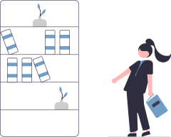
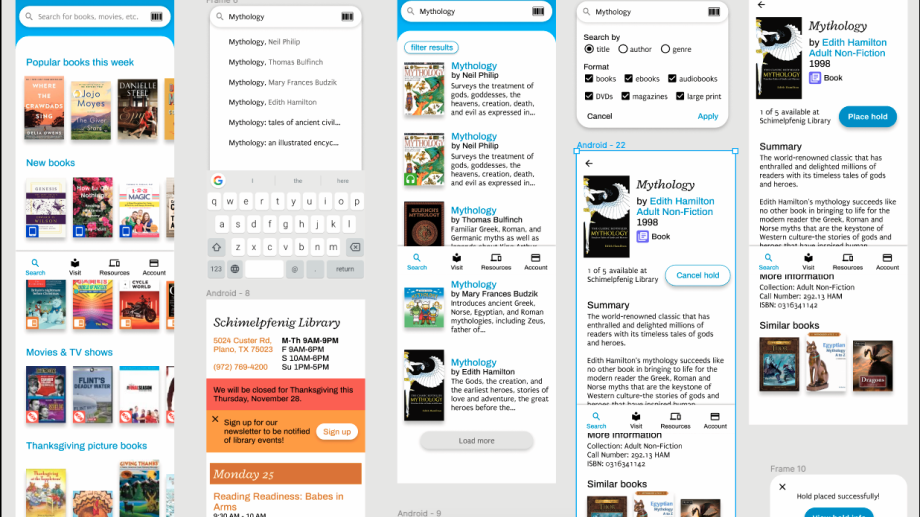

Redesigning an app for the Plano Public Library System
My hometown's public library system has an outdated mobile app riddled with functionality and design issues, leaving users unsatisfied. In an attempt to help residents take full advantage of the public library, I redesigned the app to make it easier for users to access the library catalog and learn more about what services the library has to offer.
The City of Plano offers a free app that allows residents to search the Plano Public Library catalog,
place items on hold, renew items, access their account, and view upcoming library events. On the Google Play store,
the app has several negative reviews:
"The interface takes me back 5 years. "Outdated" is an understatement."
"Not at all user friendly. Any action would need a sign in again and again. The remember me option never worked."
"The ui needs to be improved"
With over 5,000 downloads on the Google Play store, this app is an important way for residents to access the library catalog.
If the app's UI is updated and user experience is improved, residents will be more satisfied with the app and can take full advantage
of what the public library has to offer.
User Needs (taken from reviews)
I evaluated the Plano Library app using Nielsen's 10 Usability Heuristics. Some of the problems I found in the app include confusing language and labels and limited navigation freedom. I also noticed that the font size was small, the text was cramped, and there was a lack of visual hierarchy in the app.
| Usability Heuristics | |
|---|---|
| Visibility of System Status | Little or no indicator of button press on bottom navigation |
| Match between System and Real World | “Enter Search String” is the help text in the search box.
Confusing language. |
| User Control and Freedom | “No up button to go up in the hierarchy. Only a back button (in Android devices) to go back in navigation history. |
| Aesthetic and Minimalist Design | Too much information on each screen
Cramped text Small icons on bottom navigation Outdated design |
| Help Users Recognize, Diagnose, and Recover from Errors | Lack of error messages when app does not function as expected |
I created a prototype using the wireframe from the previous step. I used the desktop version of the Plano Library catalog and the current app to inform my visual design decisions. T he library seems to be going for a friendly, minimalistic look, and they use rainbow colors. To improve readability, I used larger fonts, typefaces that had ample contrast, and language that users could easily understand. I also made sure that buttons and links were appropriately sized and spaced, and updated the design to look more modern.

To test my hypothesis, I conducted a usability test to compare my prototype and the original Plano Library app.
I hoped to see a greater task completion rate with my prototype, indicating that my design was more effective.
I also hoped the participant would think that my prototype looked more modern than the original app.
After the usability test, I modified the prototype as a result of the participant's recommendations.
Findings & recommendations:
I redesigned the mobile app for my hometown's public library and evaluated the effectiveness of my redesign with a comparative usability test. The test results indicate that my redesign may be more user-friendly and achieves the business and user goals effectively, but more tests need to be conducted to prove this claim. Regardless, I learned a lot from this project about user testing, information architecture, and implementing usability guidelines. I realize I have a lot to learn about conducting and constructing usability tests that can gather the most pertinent information. If I were to do this project again, I would have conducted usability tests with the original app before coming up with a hypothesis or strategy. In the future, I would like to learn how to construct usability tests that I can run throughout the design process, recruit many participants, and process more data to improve my designs.
VIEW PROTOTYPE